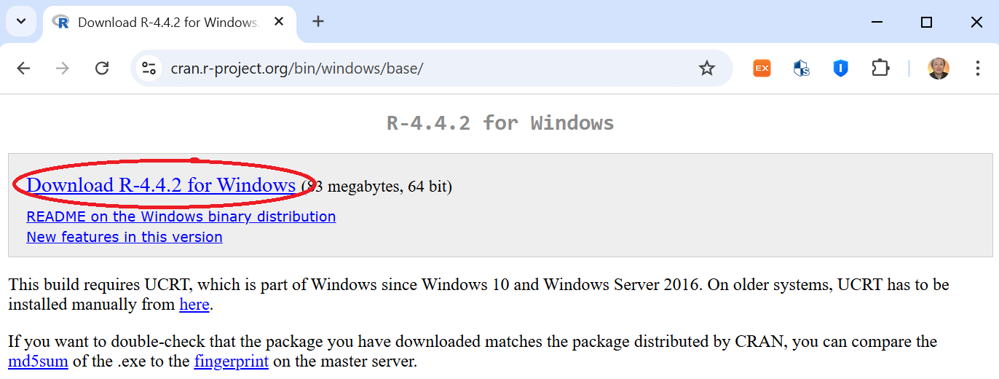
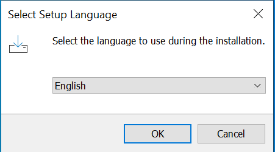
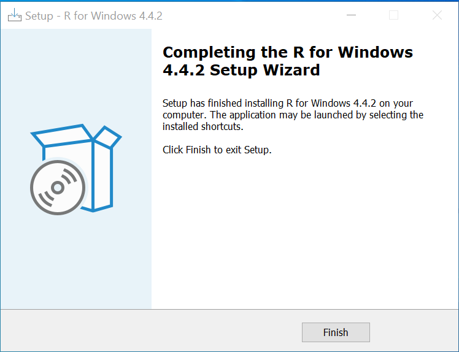
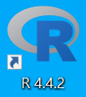
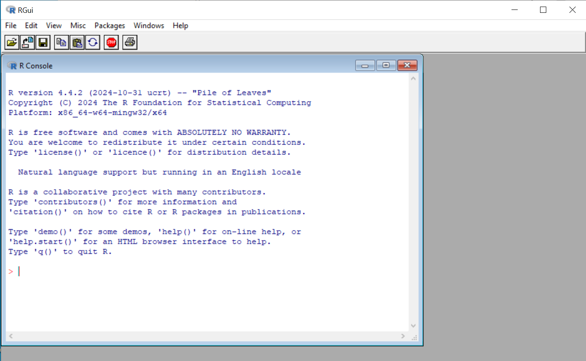
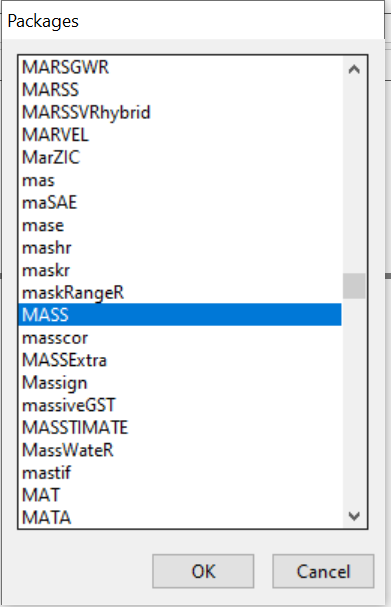
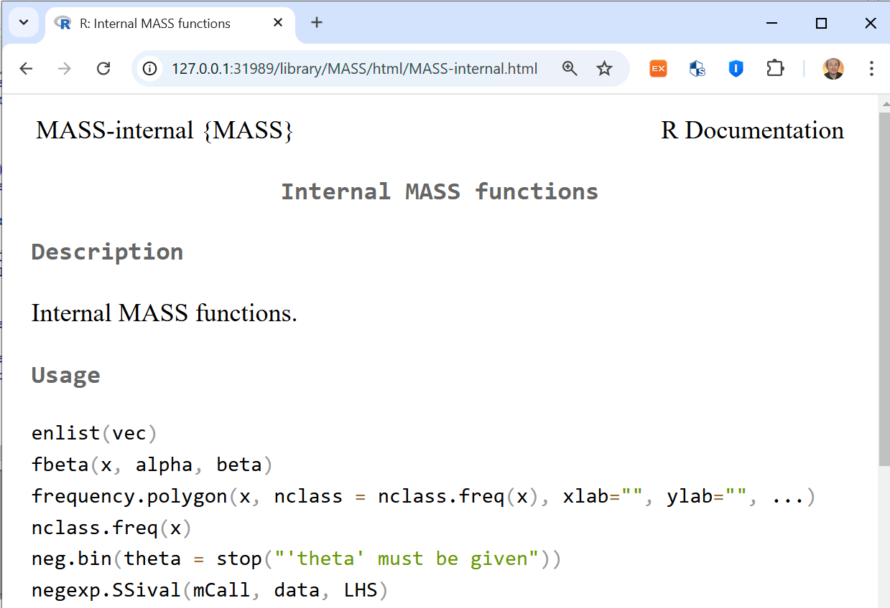

R installation and basic operation
R basic operation pdf
Author: Professo Jung Jin Lee, Soongsil University, Korea (jjlee@ssu.ac.kr)
Statistical packages such as SPSS and SAS are software programs that include many graphical analysis and statistical analysis,
and most of them are expensive commercial products. However, R is a software that is developed and maintained by the R Foundation,
which is sponsored by various institutions around the world, and is provided free of charge to individuals.
R is a software based on S, which was developed by Chambers and others at Bell Laboratories in 1976, and Robert Gentleman and
Ross Ihaka at the University of Auckland, New Zealand, released the source code in 1995. Currently, many people around the world
are contributing to the development of R software. We introduce the installation procedure of R and explain the basic operation of
R for use in this book. Further appropriate R commands are introduced at the end of each each chapter for practice.
For other detailed R commands, please download and refer to various manuals from ‘Manuals’ on the left side of ‘Documentation’
at http://www.r-project.org. The ‘An Introduction to R’ manual is useful for beginners.
- Installation of R
- Basic operation of R
1. Installation of R
Here is how to download and install the latest version of R for Windows.
| 1) If you enter http://cran.r-project.org/bin/windows/base/ in the Internet address bar, the following screen will appear.

|
| 2) Click ‘Download R-4.4.2 for Windows’ to download the R-4.4.2-win.exe file and run it. |
| 3) Select the language 'English' to use during the installation

|
4) Click the ‘OK’ button to start the installation.
When the installation information appears, click the ‘Next’ button several times until you see the following screen

Click 'Finish' button.
|
| 5) Double-click the shortcut icon created on your desktop as shown below:

|
| 5) Double-click the shortcut icon created on your desktop as shown below:

|
2. Basic operation of R
R is basically a command-based software in which the system interprets the user's input commands and performs
the desired statistical analysis. Recently, many Windows application softwares use a convenient menu-based system
such as SPSS and MINITAB. However, for creative analysis rather than general statistical analysis,
the command-based method has more advantage. R basically uses the command-based method so that users can easily
install new analysis methods they have developed themselves. However, R can also be used in the Windows menu method
by installing additional packages.
Learning R in the command-based method means learning the commands and related grammar provided by R.
If the user already has knowledge of C or other programming languages, R can be easily learned.
Even if the user has little knowledge of programming languages at all, it is easier than learning
a programming language.
A. Start and end of R
You can start R by double-clicking the R icon on the Windows desktop. The symbol on the initial screen
‘>’ is called a
prompt, and you enter commands from the next column.
Enter an appropriate R command and click the [Enter] key, and the system will execute it. For example,
if you enter the following arithmetic command and click the [Enter] key, the result of the sum of the two numbers,
11, will appear on the next line with square brackets [1]. '#' means a comment line and it will not executed in R.
> 3+8
[1] 11
|
| # [1] means the first result for the command, and some commands may show multiple lines of results. |
To quit R, type the following and press the [Enter] key.
| > q() |
| # Parentheses ( ) which indicates a function are required, and an error occurs if they are not present. |
Then, a message will appear asking, “Save the workspace image?” Select “Yes,” “No,” or “Cancel” as needed.
Usually, workspace images are not saved, but they are saved only when absolutely necessary.
B. Arithmetic Operations
R can also be used as a simple calculator for arithmetic operations. Addition, subtraction, multiplication, division,
and exponentiation can be performed using arithmetic operators such as +, -, *, /, ^, as in the following example.
When multiple arithmetic operators are present, the order of precedence is as in mathematics: ^ has the highest priority,
followed by * and /, and then + and -. Spaces between R commands are ignored, and # indicates the start of a comment.
> 3 - 5
[1] -2
> 8 + 3 * 5 # 3 * 5 is calculated first
[1] 23
> 1 + 6 / 3 # 6 / 3 is calculated first
[1] 3
> 3 ^ 2 + 2
[1] 11
|
There is also a modular operator %% that calculates the remainder. For example, the remainder of 3 when dividing 24 by 7,
i.e. 24 (mod 7), is as follows:
C. Storage of numbers using variables
In R, it is convenient to store numbers or calculated values in a certain storage location and use them when needed.
For example, the operation that adds 3 and 5 to 8 can be performed as follows.
> a = 3
> b = 5
> c = a + b
|
The meaning of the above operation is to store 3 in a storage location named a, store 5 in a storage location named b,
and add the two numbers stored in a and b and store them in a storage location named c. The R system only performs
the operation and does not give any answer, but to see the value stored in c, type c after the prompt and click
the [Enter] key.
In the expression a = 3, the operator = can be replaced with <-. This operator is preferred by many people
as it means assigning a number to a storage location, and this book also uses the operator <-.
Storage location names such as a, b, and c are called variable names, and can be named using
a combination of letters and numbers, distinguishing between uppercase and lowercase letters.
Variables created by users in the R system are called objects, and you can view all objects
in the workspace you are currently working on using the objects( ) or list( ) functions as follows.
> objects( )
[1] "a", "b", "c"
|
Not only variables that store a number, but also vectors and matrices that we will learn next are objects.
D. Vector
In R, you can define and operate on a mathematical vector, which is a collection of numbers or characters,
using the
c( ) function. A vector is also an object in R.
> x <- c(1, 3, 5) # Definition of vector x with three numbers 1,3,5
> x # to see the elements in x
[1] 1 3 5
> s <- c("a", "b", "c") # Definition of vector s with three characters "a","b","c"
> s # to see the elements in s
[1] "a" "b" "c"
|
Vectors defined as above are recognized as column vectors. When giving initial values to vector elements as numbers
that increase (decrease) regularly, it is convenient to use ":"
> y <- 5:10 # assign numbers from 5 to 10 with increment 1
> y
[1] 5 6 7 8 9 10
|
You can also create a new vector by combining (joining or concatenating) the elements of two vectors.
> z <- c(x, y) # combine two vectors x and y defined above
> z
[1] 1 3 5 5 6 7 8 9 10
|
It is also possible to see only some elements of a vector.
> y[2] # second element of y vector
[1] 2
> y[c(2,4)] # second and 4th elements of y vector
[1] 2 8
|
Vector operations can also be performed as follows:
> x * 3 # multiply 3 to each element of x vector
[1] 3 9 15
> w <- x - 3 # subtract 3 from each element of x vector, and assign it to w vector
[1] -2 0 2
> x^2 # square each element of x vector
[1] 1 9 25
|
E. Matrix and array
In R, you can use a matrix of numbers consisting of rows and columns. A matrix is also an object in R.
> m <- matrix(1:6, nrow=2, ncol=3) # Define a 2 by 3 matrix m with 6 numbers from 1 to 6
> m
[,1] [,2] [,3]
[1,] 1 3 5
[2,] 2 4 6
|
The elements of a matrix or the notation of rows and columns is as follows:
> m[1,2] # 1st row, 2nd column element
[1] 3
> m[1,] # all elements at the 1st row
[1] 1 3 5
> m[,] # # all elements at the 1st column
[1] 1 2
|
Three dimensional array is possible using array.
> a <- array(1:24, c(3,4,2)) # Define array which consists of 3 rows by 2 columns matrix two times using from 1 to 24
> a
..1
[,1] [,2] [,3] [,4]
[1,] 1 4 7 10
[2,] 2 5 8 11
[3,] 3 6 9 12
..2
[,1] [,2] [,3] [,4]
[1,] 13 16 19 22
[2,] 14 17 20 23
[3,] 15 18 21 24
|
F. Data frame and basic analysis
Consider the following table-like data consisting of rows and columns is saved in a file called sample.txt
in a folder called c:\Rwork. The columns are separated by 'spaces', and the first row contains the names of each column.
The text file imported into R must have a last line without any data.
name age income
kim 28 200
lee 33 300
park 41 400
|
Columns can also be separated by commas (,), which is called a CSV file. The space, comma, or tab
that separates columns is called a column delimiter.
In R, you can use the function called data.frame( ) to load and save this data to the system.
To read the data saved in the C:\Rwork folder, from the R main menu, select
‘File’ => ‘Change Directory’ => At the file browser, select ‘Local Disk (C:)’ => ‘Rwork’ folder,
and then click the ‘OK’ button. The R command that reads the sample.txt file and creates a data frame
called test is as follows. The related function names( ) is a useful command when looking at variable names,
and attach( ) is a useful command when using variable names in other commands.
> test <- read.table("sample.txt", header=T) # read data file
> test # list the data in test data frame
name age income
1 kim 28 200
2 lee 33 300
3 park 41 400
> names(test) # list variable name in test data frame
[1] "name" "age" "income"
> attach(test) # variable name of test can be used in other R commands
|
The data frame function is similar to matrix, but the difference is that the first row contains the names of each column.
A data frame called test created in R becomes an object, like a variable, vector, or matrix.
Once you have created a data frame, you can do some simple basic analysis. The R command to find the average of
all variables in an object called test is as follows:
> mean(test)
name age income
NA 34 300
|
Since name is character data, it outputs NA and gives a warning that the average cannot be calculated.
You can see that the average of age is 34 and the average of income is 300.
You can draw various figures using the plot( ) function. The R command and results for drawing
a scatter plot of age and income are as follows. The scatter plot of age and income appears in a new window.
plot( ) function has various options, and you can see it by typing ‘? plot’ for more information
to see the webpage that appears. For other R commands, type ‘? command’ to see detailed options.
G. Using R package
Statistical analysis application software that can be used in R is called a
package.
Basically, you can use the provided package by selecting it from the main menu, installing it, and then using it.
For example, in order to draw a parallel coordinate plot described in Chapter 2, you must first install
the package called
MASS. To install the package, select ‘Package’ => ‘Install package’ from the R main menu,
select '0-Clud(https) and click 'OK',adn when the ‘Packages’ window appears, select ‘MASS’ and click ‘OK’.

You can use a simple R command such as "install.packages('MASS')" to install a R package.
> install.packages('MASS')
Installing package into ‘C:/Users/jlee/AppData/Local/R/win-library/4.4’
(as ‘lib’ is unspecified)
trying URL 'https://cloud.r-project.org/bin/windows/contrib/4.4/MASS_7.3-61.zip'
Content type 'application/zip' length 1174216 bytes (1.1 MB)
downloaded 1.1 MB
package ‘MASS’ successfully unpacked and MD5 sums checked
The downloaded binary packages are in
C:\Users\jlee\AppData\Local\Temp\Rtmp6X3BAj\downloaded_packages
> library(MASS) # it enables to use all function in MASS
|
In order to see detail functions of MASS package, enter '??MASS', then a web page appears.
Select 'MASS::enlist Internal MASS functions' which shows detail function argument as follows.
